Wpisz Kambium-Schody w Google i przeczytaj opinie. Piszą je klienci po montażu, nie my.
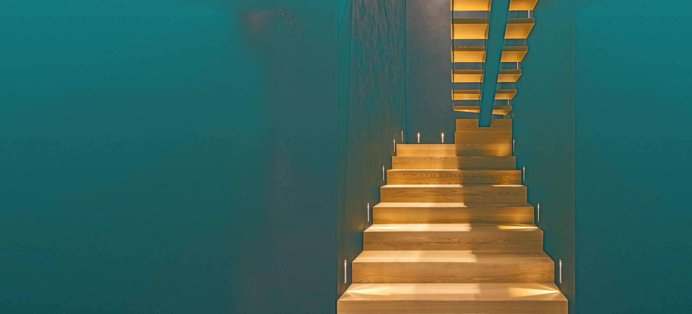
Schody od projektu po gotowy bieg.
Drewniane, betonowe, żelbetowe i metalowe. Od 2011 roku projektujemy i wykonujemy schody w powiecie pińczowskim.
Od 2011 rokuprojektujemy i wykonujemy schody
Pomiar u klientawymiar bierzemy na miejscu
Drewno, beton, stalmateriał dobrany do wnętrza
Projekt pod wymiarbieg dopasowany do otworu w stropie
Powiat pińczowskipracownia w Unikowie koło Pińczowa
O pracowni
Od 2011 roku robimy schody, w których liczy się każdy centymetr.
Od 2011 roku projektujemy i wykonujemy schody. Siedzibę mamy w Unikowie koło Pińczowa, a pracujemy głównie w powiecie pińczowskim i okolicach.
Każde zlecenie traktujemy osobno, bo przy schodach liczy się każdy centymetr wysokości.
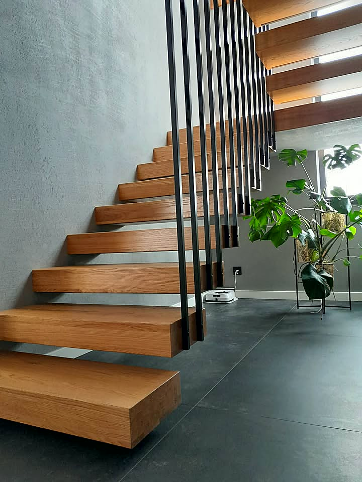
Opinie
Sprawdź nas, zanim zadzwonisz.
Dostajesz jasną cenę i termin, zanim cokolwiek ruszy.
Masz pytanie o schody do swojego domu? Najszybciej odpowiemy przez telefon.
Gdzie nas sprawdzićGoogle · Facebook · telefon
Na Facebooku znajdziesz nasz profil. Możesz tam też do nas napisać.
Najwięcej powie rozmowa. Zadzwoń, opowiedz o swoim domu i zapytaj o wszystko, co chcesz wiedzieć.
Rodzaje schodów
Zobacz, jakie schody możemy zrobić u Ciebie.
Wybierz rodzaj i sprawdź, kiedy pasuje najlepiej. Zdjęcia pokazują przykładowe rozwiązania, a o nasze realizacje zapytaj przy telefonie.
Typ /01
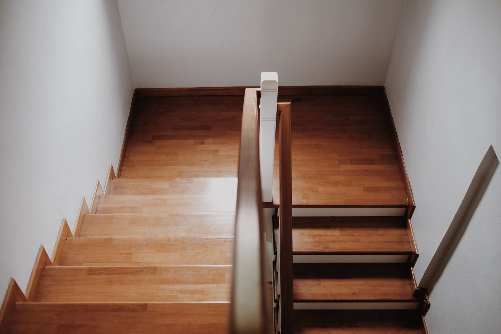
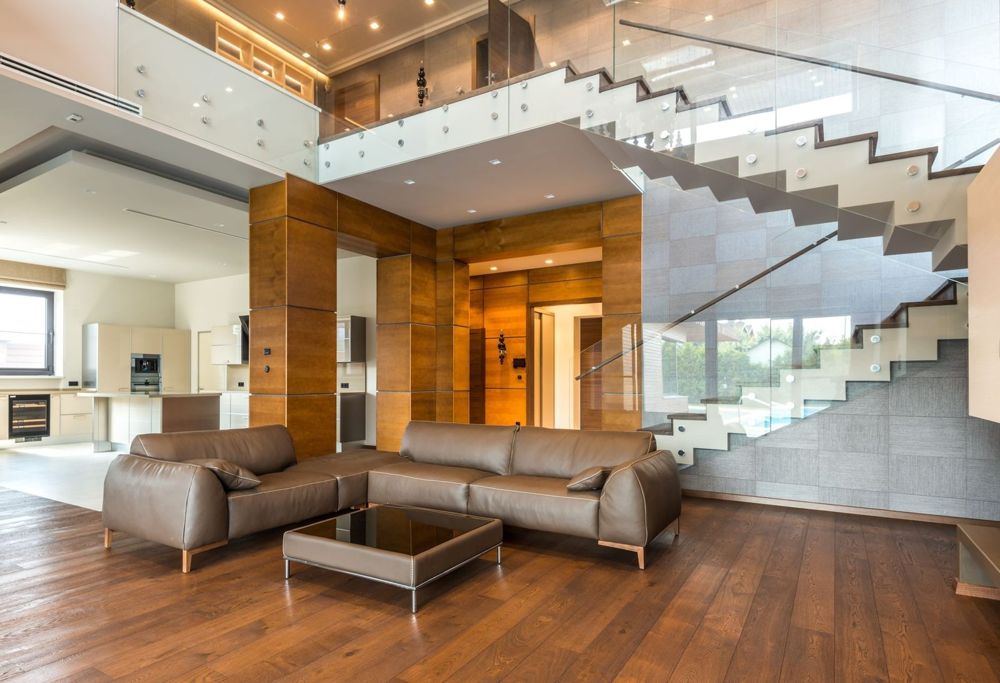
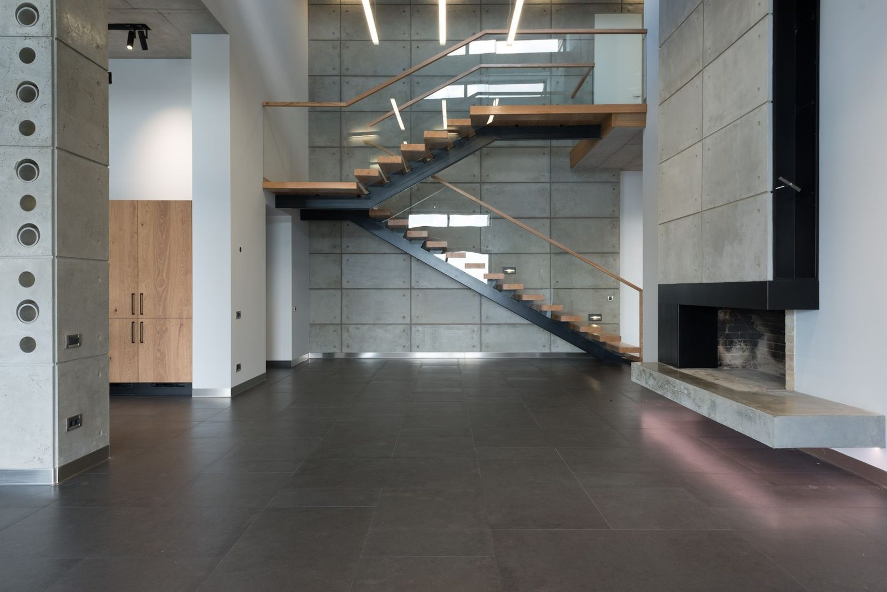
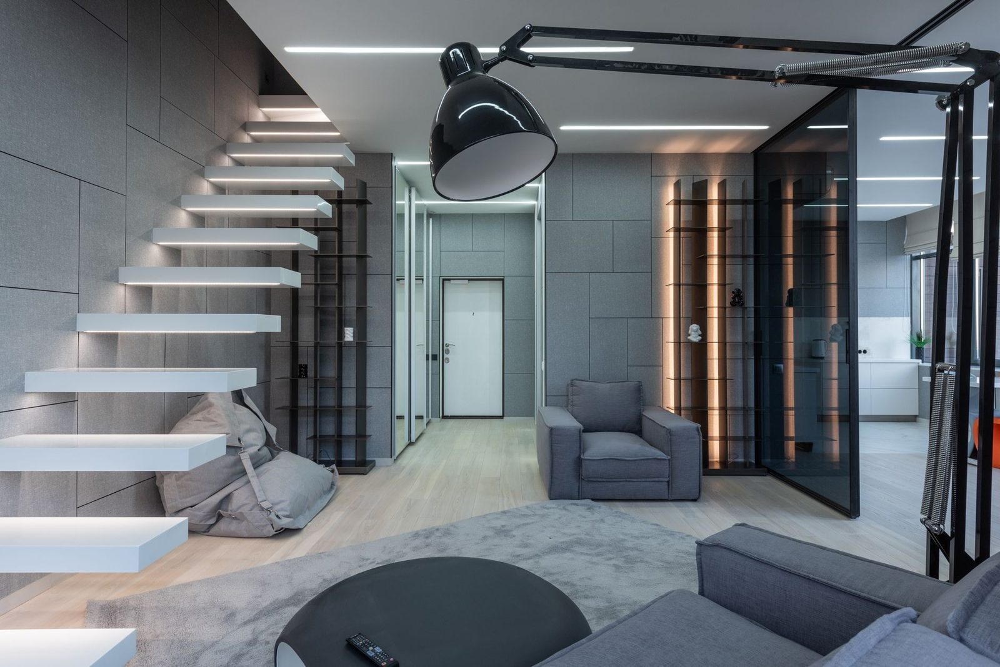
Dwa biegi z drewna ze spocznikiem01 / 04
Galeria
Schody we wnętrzach
Drewno, beton i stal. Zobacz, jakie rodzaje schodów można zrobić we wnętrzu, a o nasze realizacje zapytaj przy telefonie.
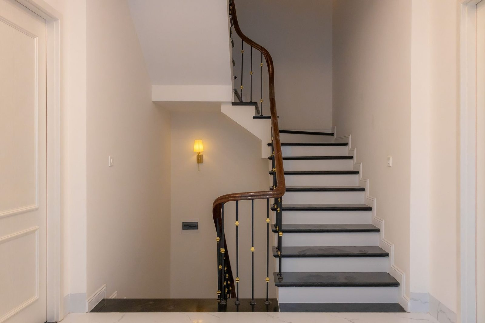
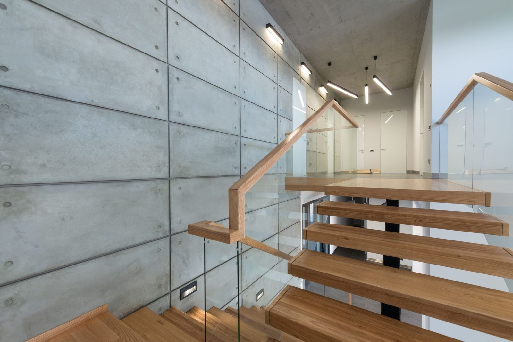
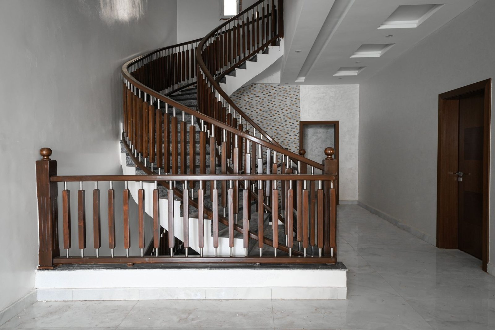
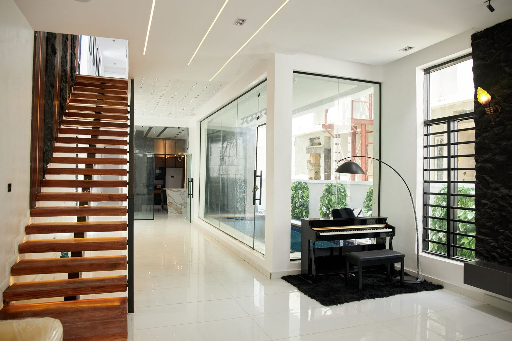
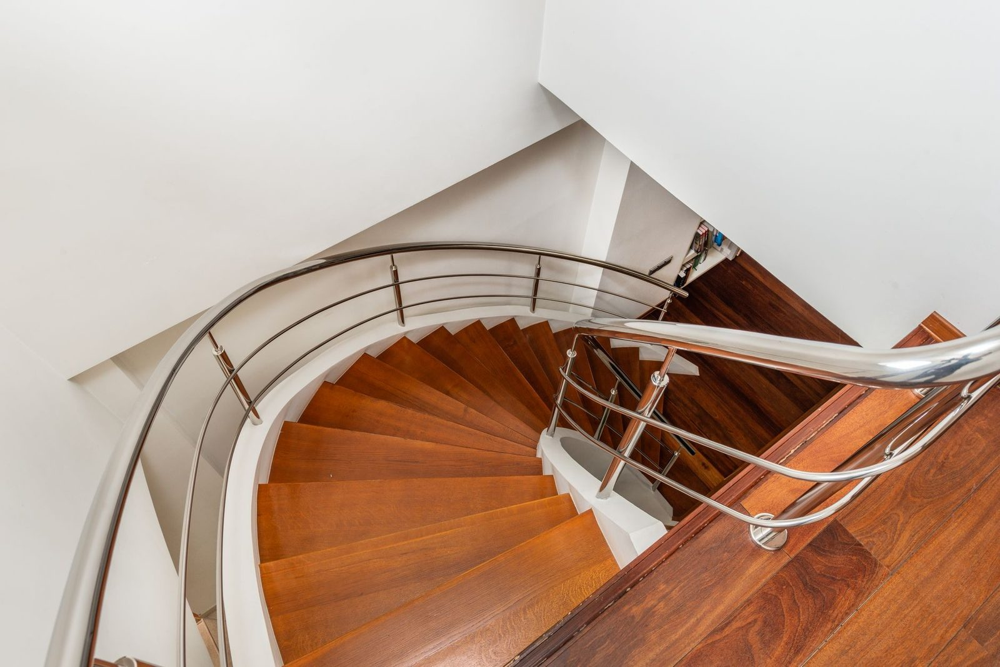
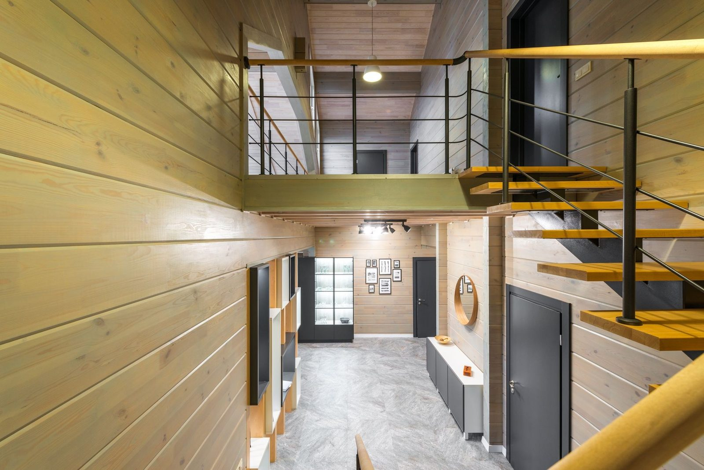
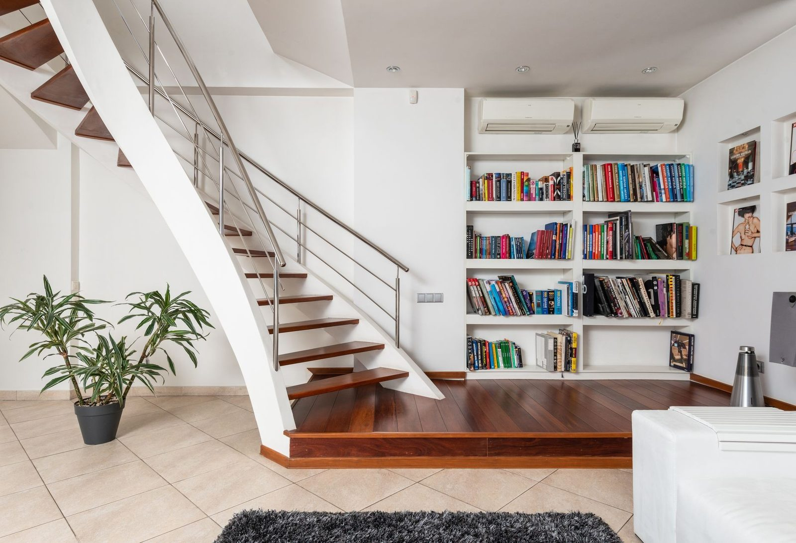
Wycena
Ile będą kosztować schody w Twoim domu?
To zależy od wysokości, otworu w stropie, kształtu biegu i materiału. Dlatego nie podajemy kwot w ciemno. Opowiedz, jakie schody planujesz, a dostaniesz jasną cenę i termin, zanim cokolwiek ruszy.
Zapytaj o wycenęWycena na oko
Schody, kompletjedna kwota
Bez wymiarów. Bez materiału. Bez terminu.Wycena Kambium-Schody
- Wymiaryz pomiaru u klienta
- Kształt biegupod otwór w stropie
- Materiałdrewno, beton, stal
- Wykończenieustalone w projekcie
- Terminpodany razem z ceną
Cena i terminprzed startem prac
Oferta
Schody z każdego materiału.
Drewno, beton, żelbet i stal. Każde schody projektujemy pod wymiar konkretnego domu.
Cała oferta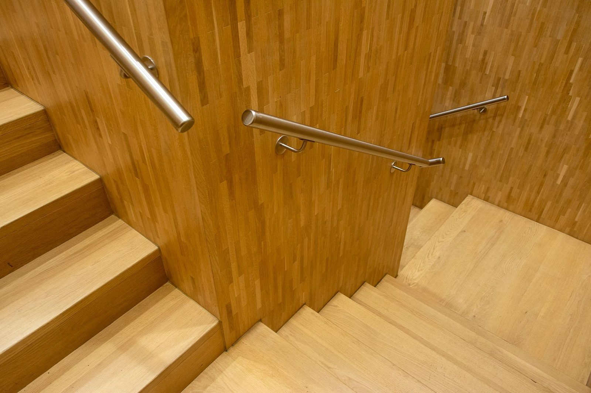
Ciepłe pod stopą i pasujące do większości wnętrz, od klasycznych po nowoczesne.
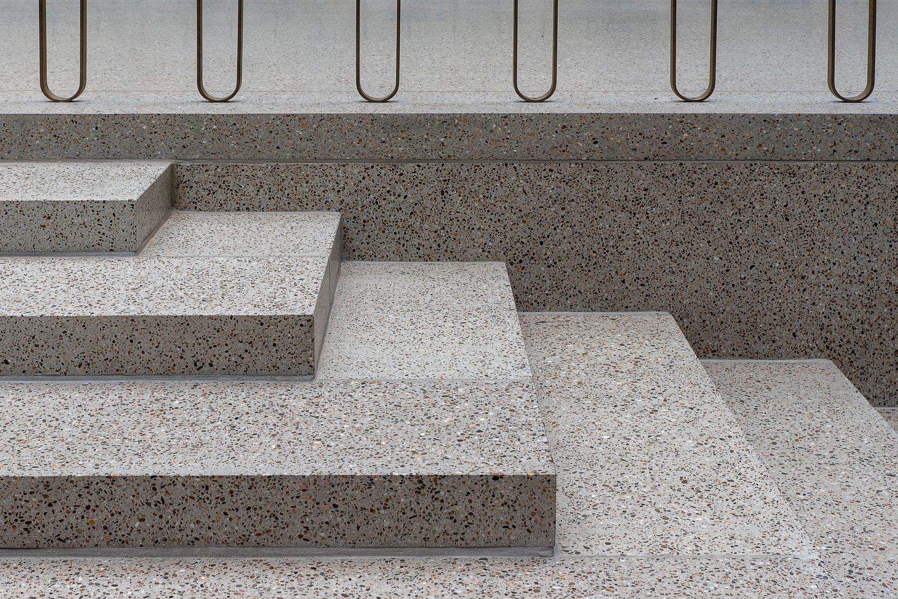
Mocne konstrukcje betonowe i żelbetowe, lekkie schody metalowe oraz zlecenia pod nietypowy otwór.
Nie wiesz, które wybrać? Zapytaj o wycenę albo zadzwoń: +48 661 917 916.
Dlaczego Kambium
Dlaczego warto zamówić schody właśnie u nas.
- /01
Od 2011 roku
Projektowaniem i wykonaniem schodów zajmujemy się od 2011 roku.
- /02
Pomiar u klienta
Wymiar bierzemy na miejscu, bo przy schodach liczy się każdy centymetr wysokości.
- /03
Projekt pod wymiar
Kształt biegu dopasowujemy do otworu w stropie i do Twojego domu.
- /04
Drewno, beton, stal
Materiał dobieramy do wnętrza i do miejsca, w którym schody mają stanąć.
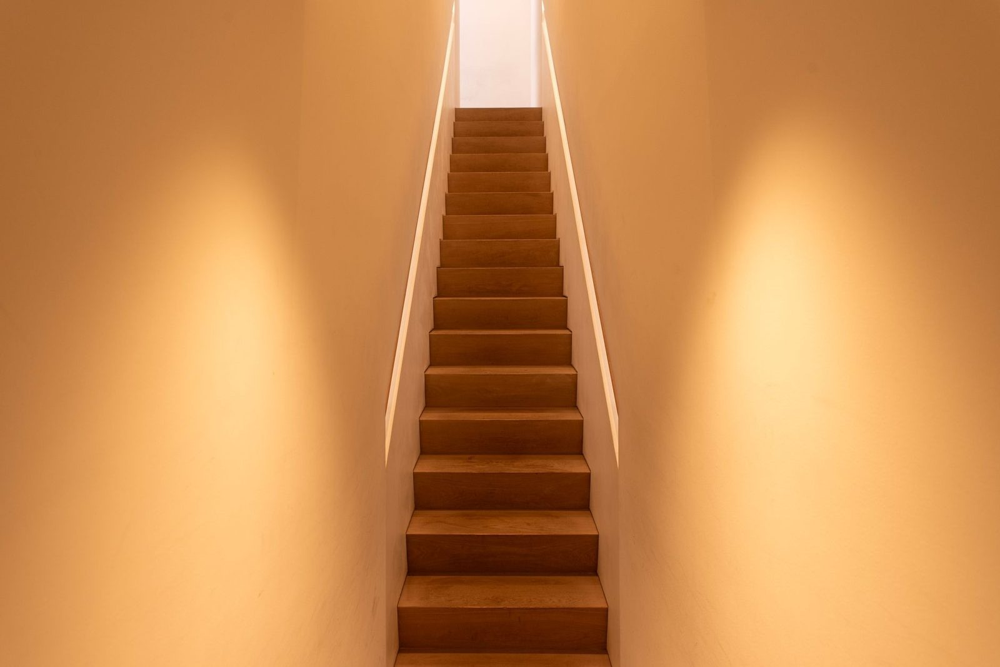
Gdzie pracujemy
Pracownia w Unikowie. Schody w powiecie pińczowskim i okolicach.
Powiat pińczowski
+48 661 917 916Pińczów · Działoszyce · Kije · Michałów · Złota
i okoliczne miejscowości
Pytania
Najczęstsze pytania o schody.
Krótko o tym, co robimy i jak wygląda zamówienie. Resztę najłatwiej omówić przez telefon.
/01Jakie schody wykonujecie?
Drewniane, betonowe, żelbetowe i metalowe, a także schody nietypowe: do małych pomieszczeń, pod nietypowy otwór w stropie albo według Twojego pomysłu na kształt biegu.
/02Gdzie pracujecie?
Siedzibę mamy w Unikowie koło Pińczowa. Pracujemy głównie w powiecie pińczowskim i okolicach.
/03Jak wygląda wycena?
Opowiadasz, czego potrzebujesz, a my doradzamy rozwiązanie. Potem dostajesz jasną cenę i termin, zanim cokolwiek ruszy.
/04Mam mało miejsca albo nietypowy otwór w stropie. Zrobicie takie schody?
Tak, takie zlecenia też bierzemy. Materiał i formę dobieramy indywidualnie, po pomiarze i rozmowie o tym, jak schody mają wyglądać.
/05Czy schody betonowe można później wykończyć?
Tak. Betonowe schody można później wykończyć tak, jak pasuje do wnętrza.
Zapytaj o wycenę schodów.
Opowiedz, jakie schody planujesz. Odpowiemy z propozycją, ceną i terminem.